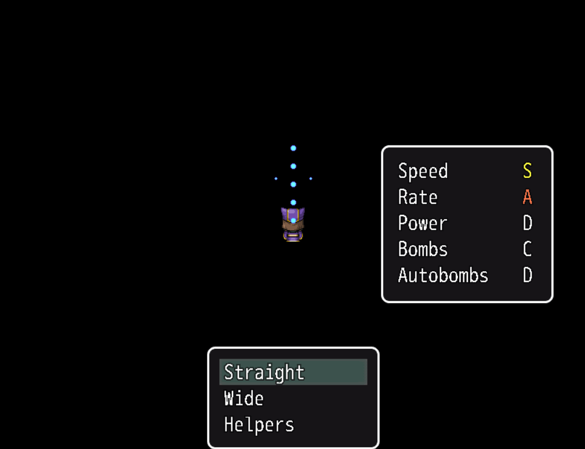
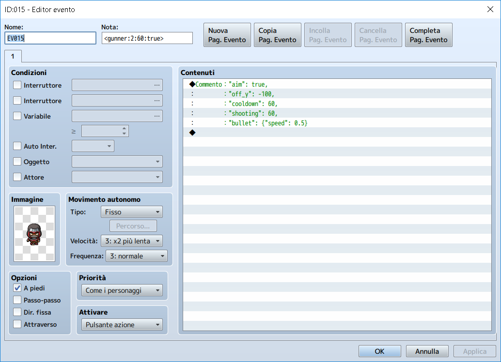
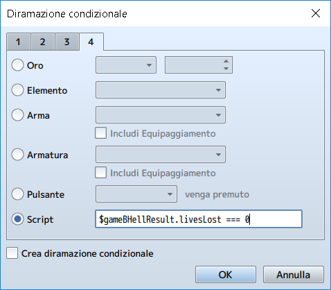
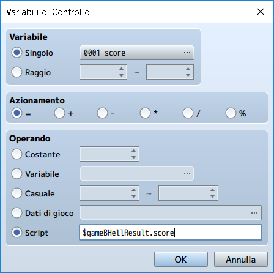

More than a tutorial, this page is a description of the plugin's mechanics.
Player
The player is the entity which can be controlled with the mouse (left click shoots, right click throws a bomb, movement is directed towards the last click, regardless of which button was pressed) or the keyboard(arrows move the player, ok shoots and shift throws a bomb).
At the beginning of the stage, the player is given a certain number of lives and a stock of bombs. There are no in-stage powerups, however:
- every time the player is killed, its stock of bombs is refilled,
- when the score reaches certain thresholds (see Using the plugin), new lives will be awarded.
The player's movement speed and shooting pattern can be customised in the configuration file (see Configuring the player) and a simple ranking system allows to upgrade some of the player's behaviour:
- Speed: improves the manouverability of the player (rank D equals to 2 pixel per frame, rank S equals to 10 pixels per frame),
- Rate: improves the rate of fire of the player's bullets (at rank D the emitters will fire with a
periodequal to the value specified in the configuration file, at rank S they will fire atperiod / 5). - Power: improves the fire power of the player (each emitter has a list of power ranks at which they are enabled, see Configuring the emitters),
- Bombs: improves the number of bombs carried by the player (rank D carries 1 bomb, rank S carries 5),
- Autobombs: enables/improves the autobomb panic attack (rank D disables autobombing, rank S allows to counterattack up to 4 times for each life).
Before each stage, any of the unlocked players can be chosen for that specific stage.
If no player has been unlocked when a stage starts, the stage is automatically lost and you are sent back to the map.

A player will be killed if a single bullet enters its hitbox or if an enemy crashes against it, throwing a bomb (as well as other special actions like stunning a boss) will cause every enemy bullet on screen to disappear.
If there are bombs available and the autobombs rank allows it (i.e. C or above), when a bullet hits the player, it will automatically throw a bomb to prevent its own death. When the bombs stock is exhausted or the number of panic attacks already dealt exceeds the autobombs rank (e.g. if the rank is B and the player has already panicked two times), no counterattack is possible and the player will die. The autobombs counter is reset every time the player dies (e.g. a rank A player will be able to counter three more times after loosing a life).
At the beginning of the stage, and during respawns after death, the player starts at the bottom of the screen and moves towards the starting position, waiting until every enemy bullet has left the screen. During this phase no enemy will fire new bullets. For five seconds after respawning, the player will be invincible as well.
Enemies
Enemies appear on screen and try to prevent the player from completing a stage.
Unlike players, enemies have hitpoints, so, most of the times, more than one bullet is required to destroy them. Points are awarded for each successful bullet hitting the enemy and a final killscore is awarded as well on destruction.
Exceptions aside (e.g. bosses), crashing into an enemy will result in its (as well as the player's) destruction. If an enemy leaves the screen (apart from some exceptions), it's destroyed as well. Neither of these dispatching methods awards points.
Each enemy belongs to a class which determines its behaviour (but not its appearance), in terms of movement and shooting patterns. There are nine predefined enemy classes (see Configuring the enemies), but more can be created (see Creating new enemies).
Stage
A stage is an RPG Maker MV map handled by the engine in a particular way: the player start at the bottom and moves upwards, the map appearance depends entirely on the tiles placed on the Map Editor, while the scrolling speed is determined by the map's note (see Using the plugin). A scrolling speed of 0.1 means that the map will scroll down by a single tile every 10 frames.
When the top of the map is reached, the behaviour depends on the Scroll Type attribute of the map properties:
- If set to
Loop VerticallyorLoop Both, the map will loop, - otherwise the map will stop.
Game events with a specific note are handled as enemy generators and the stage ends when the player looses all of its lives or every generator on map has been discarded.
Except for synchronisation mechanics (see below), as soon as the player reaches a generator's y coordinate, the generator becomes active and starts spawning enemies. When all the enemies produced by a generator are destroyed (they either left the screen or were killed), the generator is discarded.
Messages (Show Text commands) inside events (either generators or "normal" events) are displayed on stage, pausing the game while shown.
Message's timing and synchronisation work in the same way as generators'.
A stage can be paused with the escape button.
If the retry or quit flags are set for the current stage, from the pause menu, it's possible to restart the current stage or give up entirely.
Some stage results (see below) are reset at each retry.
Generators
A generator is a game event with a note indicating:
- The enemy class to be spawned;
- The number of enemies to be spawned;
- The spawning period (in frames);
- The synchronisation flag;
- (Optionally) The stop flag.
The appearance of the spawned enemies is determined by the generator's charset and comments in the event page will override the default behaviour of the enemy classes.
For example, the following event will generate two gunners (one every second, or 60 frames), with overridden parameters (e.g. among other things, these gunners will aim 100 pixels above the player) and the synchronisation flag enabled:

Enemies extending the BHell.BHell_Enemy_Spline class, will be spawned at the second spline point coordinate (i.e. parameters B.x and B.y), every other enemy will be spawned outside the top margin of the screen at the generator's x coordinate.
The y coordinate of the event, on the other hand, determines when the generator will be activated.
Stage synchronisation
The stage can be in any of three states, depending on the generators active in a given moment:
- Scrolling: there are no synchronising generators active and the map scrolls downwards normally;
- Waiting for synchronisation: there is at least a synchronising generator active, the map apparently scrolls below the player, but no new generator will be enabled until the synchronising one is discarded;
- Stopped: there is at least a stopping generator and the map won't move until the generator is discarded.
These states are handled internally by two y coordinates, one (map y) determines the scrolling appearance, the other one (stage y) determines when new generators will be enabled.
Each generator has two flags which can be set to true/false in the event's note.
- When the
syncflag is set to true,stage yis frozen until the generator is discarded (i.e. every enemy generated by it has been destroyed or has left the screen); - When the
stopflag is set to true,map yis frozen until the generator is discarded.
The following screenshot is the result of four generators:
<smallfry:4:20:false:false>: neither flag is set to true, so the map will scroll normally (and the next generator is enabled as soon as the player reaches it);<smallfry:4:20:true>: thesyncflag is enabled, but thestopflag is disabled, the map scrolls, but no new generator is active;<orbiter:1:0:true:true>: both flags are set to true, so the map is stopped until the enemy (a boss) is destroyed;<smallfry:4:20:false>: just like the first generator, neither flag is enabled.

Results
At the end of a stage, the plugin stores the results into $gameBHellResult.
You can use it with other plugins or events, e.g. with an if branch:

...Or a variable assignment:
